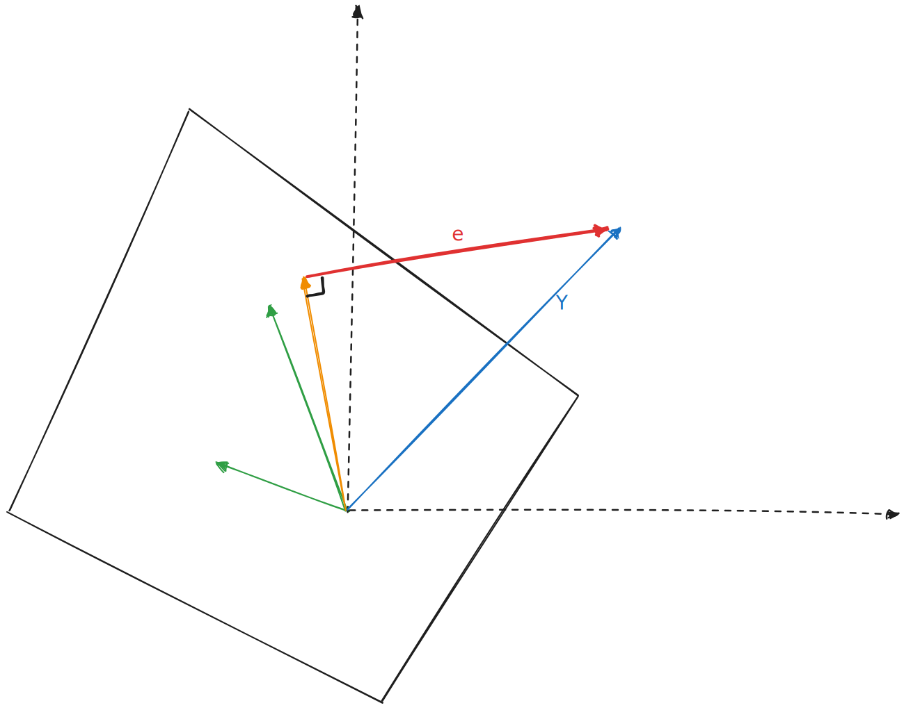

最小二乘
一维拟合
直线上有 个点 ，在直线上再找一个点 来代表这 个点，使得误差最小
一般认为就应该找这 个点的样本均值了，但为啥呢？取样本均值使得怎样的误差函数取到了最小值呢？
如果定义误差函数为 ，则
可知此时 有最小值
当然，如果从大数定律出发，样本均值自然是一阶期望的无偏估计量
直线拟合
▲
│ x ┌────┘
│ ┌────┘
│ ┌────┘
│ ┌────┘
│ x ┌────┘
│ ┌────┘
│ ┌────┘
│ ┌────┘
│ ┌────┘ x
│ ┌────┘
│ ┌────┘
│ ┌────┘
│ ┌────┘
┌────┘ x
────│
│
│ x
│
─────┼─────────────────────────────────────────────────────────────────────────►
│
找一条直线 使得直线距离采样的误差最小
此时，最小二乘定义误差为采样点误差的平方和，也即找使得 最小的 值
如果写为矩阵形式，记
则
分别求偏导，得
二元函数最值，那就先求极值，如果极值存在，肯定偏导为 ，解呗：
令两个偏导都等于 ，得到线性方程组：
这是否...
只能说可以解，但是这也太丑陋了
更好的解释
来自 MIT linear algebra course: projection matrix and least square
最小二乘的原理在于求解一个拟合结果，使得 个误差值 的平方和 最小
如果将 个误差值视为一个 维向量 ，那么恰有
这样一看，求最小值就变成了求最短向量的问题
课中老师举例为三个点
则有
▲
│
│
│
│
│
│
2│ x ┌─x───────┘
│ ┌────────┘
│ ┌────────┘
│ ┌────────┘
│ ┌────────┘
│ ┌────────┘
1┌────────┘ x
────│
│
│
│
─────┼─────────────────────────────────────────────────────────────────────────►
│ 1 2 3
直线拟合时，设直线为 ，则误差向量为
也即，我们要通过选择 使得 最短
思考：这里 相当于在组合 的列向量，如果
- 恰好在 的列空间当中，则误差向量可以取到 ，此时显然有最优解（可能不止一个）
- 不在列空间当中（如果列满秩的话，则一定不在列空间里），此时该如何取到最短的误差向量
下图中两个绿色向量 张成了一个列空间。蓝色向量是
选取 就相当于在列空间上选定了一个橙色向量（两个绿色向量的组合），橙色向量和蓝色向量之差即为误差向量

此时该如何选取 就变成了一件很显然的事情： 最短当且仅当选得向量是 在列空间上的投影
求列空间投影不太方便，并非求得 在每个列向量上的投影分量然后相加，而是解一个线性方程组：
当 列满秩时， 显然是可逆的，于是可以解得
一维兼容
同样的可以以投影来解释
更高维度
同理